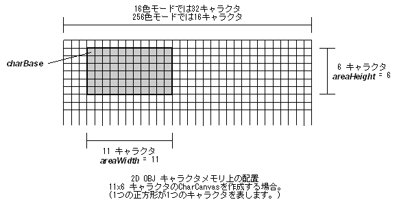

#include <nnsys/g2d/g2d_CharCanvas.h>
void NNS_G2dCharCanvasInitForOBJ2DRect(
NNSG2dCharCanvas* pCC,
void* charBase,
int areaWidth,
int areaHeight,
NNSG2dColorMode colorMode
);| pCC | [IN] Pointer to CharCanvas |
| charBase | [IN] Pointer to starting point of characters assigned to CharCanvas. Must have 4-byte alignment. |
| areaWidth | [IN] Number of characters in horizontal direction of CharCanvas |
| areaHeight | [IN] Number of characters in vertical direction of CharCanvas |
| colorMode | [IN] Color mode of target OBJ |
None.
Initializes a rectangular region in Character memory to be used as a CharCanvas for two-dimensional mapping OBJ. The hardware specifications restrict areaWidth to a maximum value of 32 characters (= 256 pixels) in 16-color mode, and to a maximum value of 16 characters (= 128 pixels) in 256-color mode. For areaHeight, the maximum value is 32 characters (=256 pixels) in either color mode.
colorMode takes either of these values:
| NNS_G2D_CHARA_COLORMODE_16 | Use 16-color characters |
| NNS_G2D_CHARA_COLORMODE_256 | Use 256-color characters |
This function assigns areaWidth characters in the horizontal direction and areaHeight characters in the vertical direction to CharCanvas, treating the character specified by charBase as the reference point.

If the combination of areaWidth and areaHeight is not the size of OBJ, then CharCanvas can display using multiple OBJ. To place these OBJ appropriately, use NNS_G2dArrangeOBJ2DRect . To find out the required number of OBJ for display, use NNS_G2dCalcRequiredOBJ2DRect.
NNS_G2dArrangeOBJ2DRect, NNS_G2dCalcRequiredOBJ2DRect
05/25/2005 Initial version.